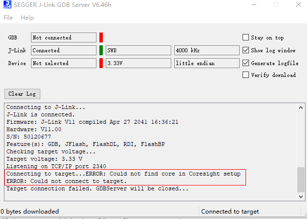
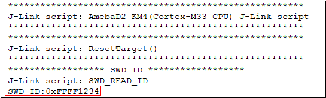
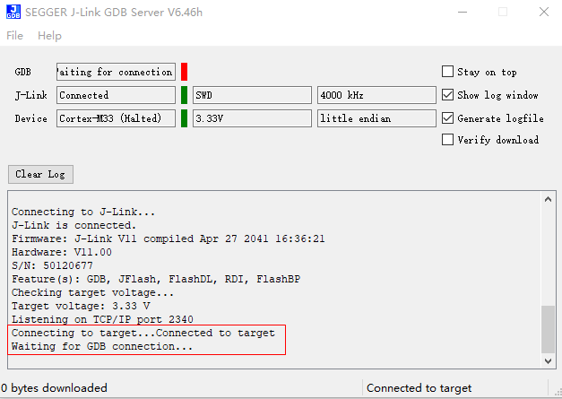

Introduction
Serial Wire Debug (SWD) is a debug interface for embedded devices, and it can be used for debugging the core. For security reasons, if you want to prevent from being accessed the states of the core and the system by others, SWD Protection will be a valid method.
By default, SWD protection is disabled, so when you connect the SWD pins with the supported debugger, refer to Application Note (Section: Setting Debugger) to make some software settings, then you can debug your program freely.
To use SWD protection, you should program SWD_PASSWORD and SWD contents into OTP in Multi-Production stage.
When you want to use SWD, you need acquire the SWD_ID of your device firstly, and next search your database to find out the specific password, which is mapped with the SWD_ID, then input this password.
If the password that you input matches the one in OTP, then you have the permission to access the core; otherwise, the access will be forbidden.
For more detail information about SWD Protection principle, refer to User Manual (Chapter: Serial Wire Debug (SWD)).
SWD OTP
SWD Contents in OTP
This section introduces the SWD contents that you may program into OTP.
Name |
Address |
Size (bits) |
Description |
INI |
|---|---|---|---|---|
SWD_PASSWORD |
Physical eFuse 0x300 |
128 |
SWD password |
FFh |
SWD_ID |
Physical eFuse 0x360 |
32 |
SWDID use to mapping the Real SWD Key |
FFh |
SWD_PWD_EN |
Physical eFuse 0x364[0] |
1 |
Enable SWD protection |
1’b1 |
SWD_PWD_R_Protection_EN |
Physical eFuse 0x364[5] |
1 |
Key write protection |
1’b1 |
SWD_PWD_W_Protection_EN |
Physical eFuse 0x364[6] |
1 |
Key read protection |
1’b1 |
RMA_SWD_PASSWORD |
Physical eFuse 0x710 |
128 |
SWD password in RMA mode |
FFh |
RMA_SWD_PWD_R_Protection_EN |
Physical eFuse 0x702[0] |
1 |
SWD Key Read Protection in RMA mode |
1’b1 |
RMA_SWD_PWD_W_Protection_EN |
Physical eFuse 0x702[1] |
1 |
SWD Key Write Protection in RMA modes |
1’b1 |
You may write different keys to each device, therefore SWD ID is designed to find out the device’s specific SWD_PASSWORD in your database.
You can acquire the device’s SWD_ID in swdpwd_password.log file mentioned in Section SWD Protection Usage step 4.
备注
It is the most convenient way to get SWD_ID by J-Link.
SWD OTP Programming
This section introduces how to program SWD OTP in Command method, you can follow next steps:
Write SWD_PASSWORD into OTP, and then read it back to check whether it’s written correctly.
Assume the key is 0x4433221188776655ccbbaa9900ffeedd:
efuse wraw 300 16 4433221188776655ccbbaa9900ffeedd efuse rraw
Then, you will get:
RawMap[2e0]: ff ff ff ff ff ff ff ff ff ff ff ff ff ff ff ff RawMap[2f0]: ff ff ff ff ff ff ff ff ff ff ff ff ff ff ff ff RawMap[300]: 44 33 22 11 88 77 66 55 cc bb aa 99 00 ff ee dd RawMap[310]: ff ff ff ff ff ff ff ff ff ff ff ff ff ff ff ff RawMap[320]: ff ff ff ff ff ff ff ff ff ff ff ff ff ff ff ff RawMap[330]: ff ff ff ff ff ff ff ff ff ff ff ff ff ff ff ff
Write SWD_ID to OTP, then read it back to check.
Assume the SWD_ID is 0x3412:
efuse wraw 360 2 3412 efuse rraw
Then, you may get:
efuse wraw 360 2 3412 efuse wraw write len:2, string len:4 wraw: 360 34 wraw: 361 12 efuse rraw efuse rraw RawMap[000]: 00 70 30 1f 01 70 87 1f 02 70 20 1f 03 70 80 1f RawMap[010]: ff ff ff ff ff ff ff ff ff ff ff ff ff ff ff ff ... RawMap[340]: ff ff ff ff ff ff ff ff ff ff ff ff ff ff ff ff RawMap[350]: ff ff ff ff ff ff ff ff ff ff ff ff ff ff ff ff RawMap[360]: 34 12 ff ff ff ff ff ff ff ff ff ff ff ff ff ff RawMap[370]: ff ff ff ff ff ff ff ff ff ff ff ff ff ff ff ff RawMap[380]: ff ff ff ff ff ff ff ff ff ff ff ff ff ff ff ff
efuse wraw 360 2 3412 efuse wraw write len:2, string len:4 wraw: 360 34 wraw: 361 12 efuse rraw efuse rraw RawMap[000]: 00 70 30 1f 01 70 87 1f 02 70 20 1f 03 70 80 1f RawMap[010]: ff ff ff ff ff ff ff ff ff ff ff ff ff ff ff ff ... RawMap[340]: ff ff ff ff ff ff ff ff ff ff ff ff ff ff ff ff RawMap[350]: ff ff ff ff ff ff ff ff ff ff ff ff ff ff ff ff RawMap[360]: 34 12 ff ff ff ff ff ff ff ff ff ff ff ff ff ff RawMap[370]: ff ff ff ff ff ff ff ff ff ff ff ff ff ff ff ff RawMap[380]: ff ff ff ff ff ff ff ff ff ff ff ff ff ff ff ff
efuse wraw 360 2 3412 efuse wraw write len:2, string len:4 wraw: 360 34 wraw: 361 12 efuse rraw efuse rraw RawMap[000]: 00 70 30 1f 01 70 87 1f 02 70 20 1f 03 70 80 1f RawMap[010]: ff ff ff ff ff ff ff ff ff ff ff ff ff ff ff ff ... RawMap[340]: ff ff ff ff ff ff ff ff ff ff ff ff ff ff ff ff RawMap[350]: ff ff ff ff ff ff ff ff ff ff ff ff ff ff ff ff RawMap[360]: 34 12 ff ff fe ff ff ff ff ff ff ff ff ff ff ff RawMap[370]: ff ff ff ff ff ff ff ff ff ff ff ff ff ff ff ff RawMap[380]: ff ff ff ff ff ff ff ff ff ff ff ff ff ff ff ff
备注
If you want to use different SWD_PASSWORDs in different devices, keep the SWD_PASSWORD and mapping SWD_ID carefully.
After connecting, the SWD_ID will be acquired as shown in SWD Protection Usage step 4.
Write RMA_SWD_PASSWORD into OTP, and then read it back to check.
Assume the key is 0x00333231242322211413121104030201:
efuse wraw 710 16 00333231242322211413121104030201 efuse rraw
Write SWD_PWD_EN bit to OTP.
efuse wraw 364 1 fe
Write
SWD_PWD_R_Protection_ENandSWD_PWD_W_Protection_ENto prevent key from leaking or tamperingefuse wraw 364 1 9e
Write
RMA_SWD_PWD_R_Protection_ENandRMA_SWD_PWD_W_Protection_ENto prevent key from leaking or tamperingefuse wraw 702 1 fc
{kind=link}
{kind=link}
备注
After programming (RMA) SWD_PWD_R_Protection_EN, the (RMA) SWD_PASSWORD cannot be read out anymore, so you should keep the two keys carefully.
SWD Debug Configuration
This chip provides two kinds of debug for both secure and non-secure regions.
Invasive debug (Halt CPU)
Noninvasive debug (Not halt CPU, just sample PC)
The SWD debug configuration in OTP is listed in following table.
Name |
OTP address |
Size (bit) |
Description |
INI |
|---|---|---|---|---|
SWD_DBGEN |
0x364[1] |
1 |
For Halt CPU |
1’b1 |
SWD_NIDEN |
0x364[2] |
1 |
For Trace |
1’b1 |
SWD_SPIDEN |
0x364[3] |
1 |
For Halt CPU (Secure) |
1’b1 |
SWD_SPNIDEN |
0x364[4] |
1 |
For Trace (Secure) |
1’b1 |
The supported combinations of CPU Control bits and their effect are shown in following table.
Debug level |
Description |
Conditions |
|---|---|---|
Invasive |
For Halt CPU |
SWD_DBGEN=1 |
Secure Invasive |
For Halt CPU (Secure) |
SWD_DBGEN=1 and SWD_SPIDEN=1 |
Non-invasive |
For Trace |
SWD_NIDEN=1 or SWD_DBGEN=1 |
Secure Non-invasive |
For Trace (Secure) |
TRUE if both of the following conditions apply:
|
SWD Protection Usage
Follow the steps below to use SWD protection after programming SWD OTP:
Reboot the device, to reload the OTP value.
Connect J-Link with SWD pins.
Double-click the
swdpwd_User.batfile in{SDK}\amebadxxx_gcc_project\utils\jlink_script.This connection may fail as shown below, because the SWD Password hasn’t been input correctly.

Open the
swdpwd_password.logfile in{SDK}\amebadxxx_gcc_project\utils\jlink_scriptto find out the device’s SWD_ID:
备注
The
swdpwd_password.logfile will be auto- generated after double-click theswdpwd_User.batmentioned in step 3.Search your database to find out the SWD_PASSWORD which is mapped with the SWD_ID.
Modify the
PASSWORD_0/1/2/3value inAP2_SWDPWD_User.JLinkScriptunder{SDK}\amebadxxx_gcc_project\utils\jlink_script.For example, if you have programmed the SWD_PASSWORD into OTP as described in step (1) of section 1.2.2, modify AP2_SWDPWD. JLinkScript as below:
U32 PASSWORD_0 = 0x11223344; U32 PASSWORD_1 = 0x55667788; U32 PASSWORD_2 = 0x99AABBCC; U32 PASSWORD_3 = 0xDDEEFF00;
备注
To successfully match the key stored in OTP and the one you input by JLinkScript file, check the password sequence.
Double-click the
swdpwd_User.batfile under{SDK}\amebaxxx_gcc_project\utils\jlink_script.This time connects OK as shown below:

{kind=link}
{kind=link}
{kind=link}
RMA Mode
When you suspect that there are some defects with the chip, and you need Realtek’s help to analyze, then you need to program the chip to RMA mode before shipping the chip to Realtek, because Realtek cannot program OTP without the customer’s help. Moreover, you need to provide RMA SWD KEY to let the Realtek has permission to access the core, or you can supply a substitute method to debug the core instead revealing the key.
备注
You should acquire SWD_ID before entering RMA Mode, because the SWD_ID is 0xFFFFFFFF in swdpwd_password.log file for RMA mode, even if you have programmed it into OTP.